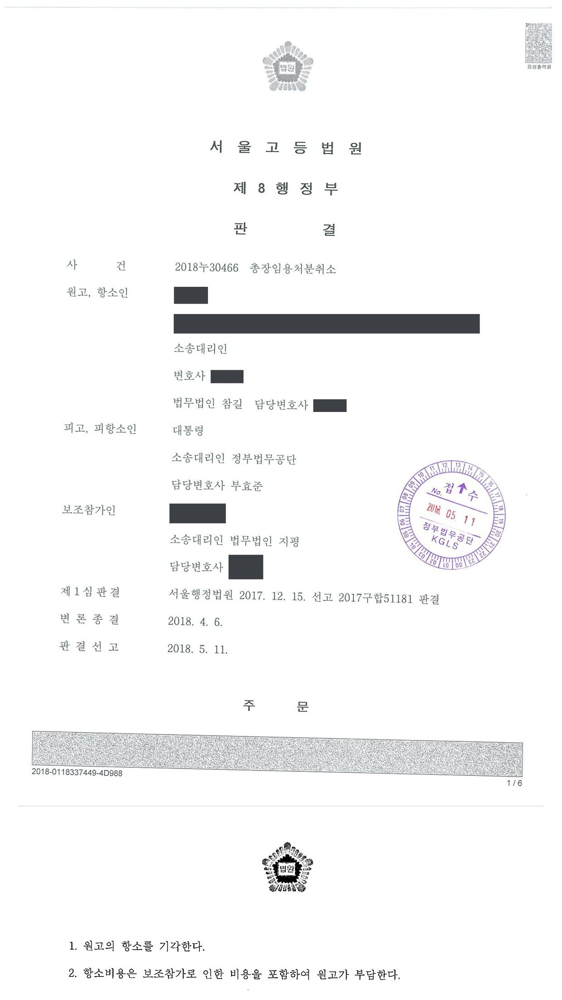

국립대학교 총장 임용처분 취소소송 (1·2심)
서울행정법원 2017구합51181 · 서울고등법원 2018누30466 · 담당변호사 부효준
사건의 요지
국립대학 총장임용후보자 선정에서 1순위로 추천된 후보자가 2순위 후보자에 대한 총장 임용처분의 취소를 구한 사건으로, 임용제청 거부와 임용처분의 절차적 하자, 총장 임용의 재량이 쟁점이 되었습니다.
판결문 2장


비슷한 처분을 받으셨다면
행정처분은 처분이 있음을 안 날부터 90일 이내에 행정심판이나 취소소송으로 다투어야 하고, 기간이 지나면 돌이킬 수 없는 처분은 집행정지를 서둘러야 합니다. 처분서를 받은 날짜부터 확인해 드립니다.